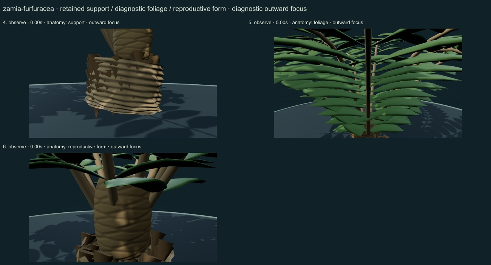
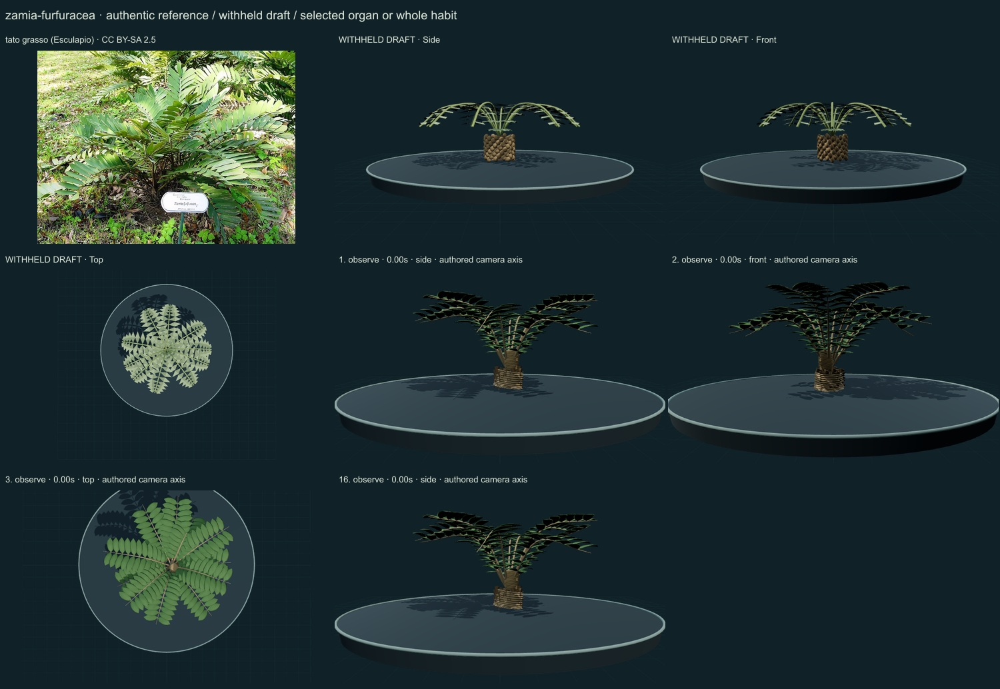
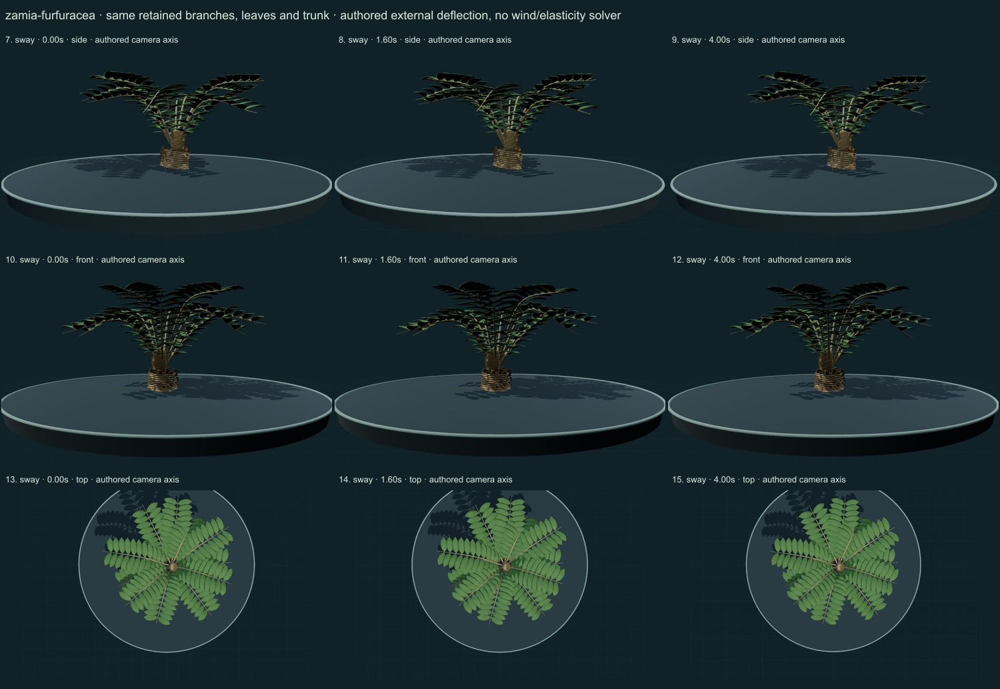

PhenoVoxel Archive · v0.6.24 · October 25, 2026
Cardboard cycad
285 records after verified publication. 15 saved drafts remain held; 265 remain to 550, including 250 without a saved draft. Release register.
Selected actual university living-plant account through search read: broad stiff leathery leaflets in pinnate fronds from a thick caudex, distinct separate-sex cones. Not a true palm; no false ordinary flowers or mature-form resizing. Selected actual university 2024 species account through search read; coarse foliage/rounded moderate-density habit and source-labelled photographs. Figure images not yet personally viewed; no figure review claimed at this checkpoint.
tato grasso (Esculapio) · CC BY-SA 2.5. Source-labelled real organism reference; preparation, life-stage, location and selected phenotype do not establish all species variation or measured 3D anatomy. Resized inside 1000 px, flattened and JPEG encoded; no generative alteration.
Exact creator, license, source/download/local checksums and access scopes remain in the data. Additional copyrighted institutional photographs and primary figures were consulted privately and linked, not redistributed or sampled into materials.
A selected low caudex supports radiating pinnate fronds with broad stiff oval leaflets, selected outer-margin tooth cues, subdued longitudinal vein relief and a coarse matte surface. A selected compact reproductive-cone study remains distinct from the fronds.
Original numerical connected woody/green axes, individual curved leaf surfaces, subdued pigment variation and selected reproductive surfaces. No source photograph pixels or measured tissue optical parameters.
Remaining: Leaflets still appear too smooth, dark and regularly paired; fine farina/hairs, serrations, venation and optical response are incomplete. Caudex/leaf-base and cone surfaces remain artificial at close range; the cone is partly obscured by petioles. The selected cone is not a complete sex/stage series or measured plant, and red-seed exposure/development is not animated.
Same retained woody axes, rachises, leaves and reproductive surfaces during small authored external deflection. Root/support position and scale remain anchored. Timing and angles are qualitative; there is no wind/elasticity solver, physiological simulation or measured biomechanics. Complete germination, organ emergence and seed-to-adult development are unavailable; no resizing of a ready mature plant.
Partly stylized original educational reconstructions. Fine morphology, age variation, tissue optics, dimensions and environmental mechanics remain incomplete or unmeasured. No independent specialist validation, scientific certification or accuracy percentage. Software checks and screenshots do not establish biological validity.
16 actual nonblank final viewer states inspected on 3 labelled sheets. Side/front/top are authored whole-habit or selected-organ camera axes; outward focus is a separate diagnostic view. Qualitative author review, not independent scientific certification.



Partly stylized original educational reconstructions. Fine morphology, age variation, tissue optics, dimensions and environmental mechanics remain incomplete or unmeasured. No independent specialist validation, scientific certification or accuracy percentage. Software checks and screenshots do not establish biological validity. Prior 274 species objects and original wolf/tiger meshes unchanged. Occurrences and cultivated accessions are not native-range boundaries. Legacy Protista/Monera are reporting conveniences.
Exact findings, sources and screenshot hashes